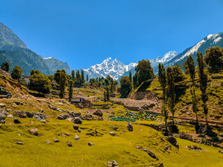

Khyber Pakhtunkhwa Land of the Valiant Pakhtuns (abbreviated as KP; Urdu: خیبر پختونخو; Pashto: خیبر پښتونخوا), is one of the four administrative provinces of Pakistan, located in the northwestern region of the country along the international border of Afghanistan. Previously known as the North-West Frontier Province (NWFP) it was renamed in 2010, following a growing demand by local political representatives to reflect the dominant ethnic group of the province (Pakhtuns). Khyber Pakhtunkhwa's provincial capital It shares borders with the Federally Administered Tribal Areas to the west; Gilgit-Baltistan to the northeast; Azad Kashmir, Islamabad and Punjab to the east and southeast.
Many tourists Places are Kpk provience.you can see a famous places are given below.

The Beautiful Valley Of Swat, Popularly Known As The Switzerland Of The East Is Holiday-Makers Delight And A Hallmark Of Magnificent Scenic Beauty And Rich Historical Past. With Its Roaring Rivers, Waterfalls, Meandering Streams, Glacier Fed Lakes, Pine Forests, Alpine Meadows, Snow Covered Peaks Of Mankial And Flaksair, Fruit Laden Orchards, Lush Green Fields, Flower Filled Mountain Slopes And Above All The Friendly Swati People Who Are Famous For Their Traditional Hospitality, Swat Is Without A Doubt One Of The Most Beautiful Tourist Destination In The Northern Valleys Of Pakistan.
Peshawar (Pronounced Pe-SHAH-Wur), The Capital Of Khyber-Pukhtunkhwa (KP), Is A Frontier Town, The Meeting Place Of The Subcontinent And Central Asia. It Is Perhaps The Oldest Living City In This Part Of Asia - A Place Where Ancient Traditions Jostle With Those Of Today, And Where The Bazaar In The Old City Has Changed Little In The Last Hundred Years Except To Become The Neighbor Of A Modern University, Some Modern Hotels, Some International Banks And One Of The Best Museums In Pakistan. The City Is Famous For Its Food And Tourism As It Is One Of The Oldest Cities Of Pakistan With Recorded History Dating Back To 539 BC. The Locals Usually Enjoy Soups For Starters And Finish Their Feast With Traditional Green Tea Known As Kehwa. Though They Like All Types Of Food, But They Are Major Meat Lovers.
Under The Shadows Of The Valley Of Tirichmir From The Hindu Kush Mountain Ranges Of The The Valley Of Chitral Is A Fascinating Combination Of Scenic Beauty And Cultural Diversity. The Land Of Apples, Apricots, Pears And Pomegranates, Chitral Stretches From 1,094 M To 7778 M Above Sea Level At Tirichmir Peak. With Its Collection Of Rugged Mountains, Gushing Rivers, Hot Springs And Fruit-Laden Orchards, Chitral Truly Is An Enchanting Part Of Pakistan. The Area Is Bordered By Afghanistan In The North And West, With The Narrow Afghan Wakhan Corridor Separating It From Tajikistan, Dir Kohistan In The South And Gilgit In The East. Chitral Can Be Accessed Via Several Mountain Passes, The Most Famous Being The Lowari Top (3,118 M) Approximately Crossing The Hindu Raj (A Spur Of The Higher Hindukush) In The South And The Shandur Pass (3,798 M) Forming The Eastern Gateway From Gilgit.
Kaghan Is A Jewel Among The Many Beautiful Valleys In The Mansehra District Of Hazara In The Khyber Pakthunkhwa Province Of Pakistan. This 160 Kilometer Long Valley Is The Most Popular Summer Holiday Spot For Both Pakistanis As Well As Foreigners. The Valley Features Pine Forests, Alpine Meadows, Crystal Clear Lakes And Cool Mountain Streams. Kunhar River, The Main Feature Of The Valley, Is Famous For Its Trout. Nestled Along The Banks Of The River Are The Towns Of Balakot, Paras, Mahandari, Kaghan And Naran.